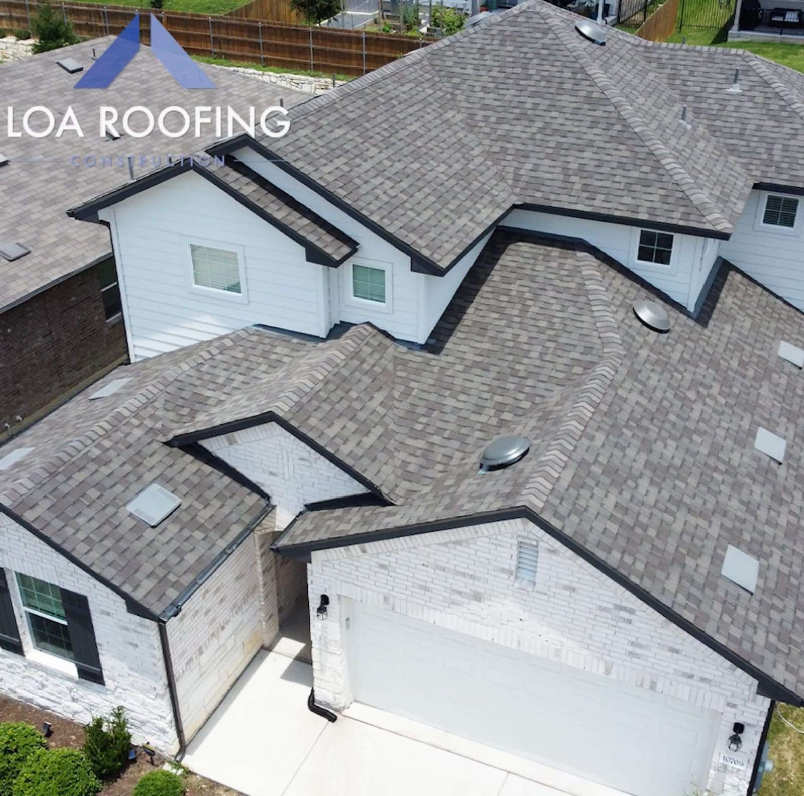

Town served
Gray shingle roof from above
Insert here: what was done on this job
Recent jobs

Town served

Town served

Town served

Town served

Town served

Town served
What we do
Shingle, metal, clay tile and flat roofing, residential and commercial, across Central Texas.
A whole new roof, done by a crew that keeps you posted. Fast work, thorough clean-up, competitive pricing.

Standing-seam metal for homes, plus metal, TPO, EPDM and built-up systems for commercial buildings.

We inspect the damage, tell you how far it goes and recommend repair or replacement. We help with hail insurance claims.

How a job runs
We look over the roof, check for hail damage and tell you plainly what we find.
No pressure. We help with the insurance claim if there is one.
The crew does the work and cleans up before they leave.
Straight from the customer
5.01004 Google reviews
They are the best period. 2,200 sq.ft. one story brick house, Josh Knox was there with crew to answer questions or concerns or readily available on text. They saw that I had a small main ridge vent, which was quite obviously too small looking at it. Replaced it with 4 circular vents. large tarps (they even covered the pool) for de roofing, haven't found a nail.
I worked with Alex Morose. He was very professional and a pleasure to work with. They replaced my entire roof almost in 1 day. They had to come back the next day to finish up a few things. They did an amazing job and cleaned everything up before they left. I highly recommend them and I would use them again.
Alex morose was awesome! He guided us through the whole process! We had some issues with insurance and decided to go through the process of paying out of pocket. Alex gave us the best quote and got the crew started very quickly and kept up with us through whole repair! Would most definitely work with them again

The crew
We serve the whole Austin metro, from Round Rock to Dripping Springs to Bastrop. Commercial and residential installs, replacements, repairs and hail damage.
No pressure. Free, no-obligation inspections, and you decide when and how the job gets done. If your roof does not need repair, we will say so.
Large tarps over the yard and pool. Nails picked up before we leave.
We say so if you don't need a repair.
We guide you through the claim.
Tarps down, thorough clean-up, nails picked up.
Find us
706 W Ben White Blvd Ste 200B, Austin, TX 78704
Crews work across Greater Austin, plus Houston, San Antonio and Dallas.